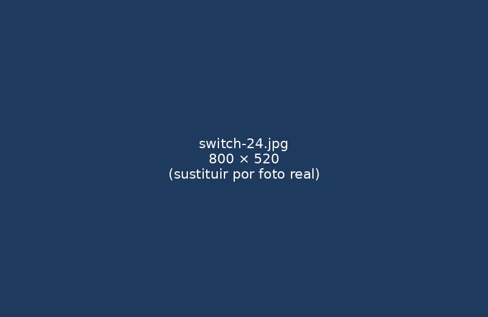

Servicios y tarifas
Planes mensuales de soporte para pymes. Todos incluyen asistencia remota y presencial.
| Plan | Horas incluidas | Respuesta | Precio/mes |
|---|---|---|---|
| Básico | 4 h | 48 h | 90 € |
| Pyme | 10 h | 24 h | 190 € |
| Premium | 20 h | 4 h | 350 € |
| Hora adicional: 35 €. Desplazamiento incluido en la Comunidad de Madrid. | |||
